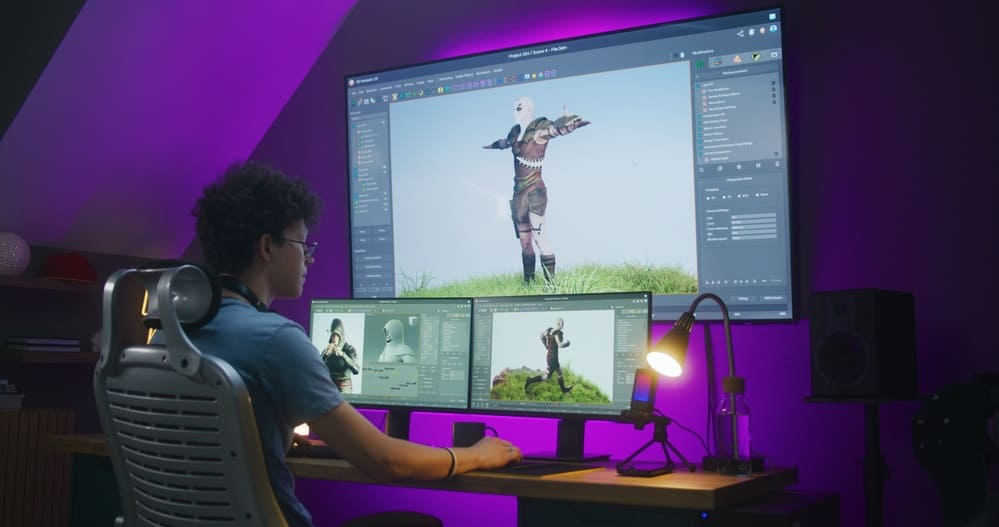

Le programmeur de jeux vidéo assure l optimisation et la performance de l architecture informatique. Aussi nommé « développeur informatique » selon les studios, le programmeur de jeu vidéo est ce maillon essentiel dans le processus de création qui, grâce à sa maîtrise de différents langages de code, va donner vie au jeu en concevant le moteur.
